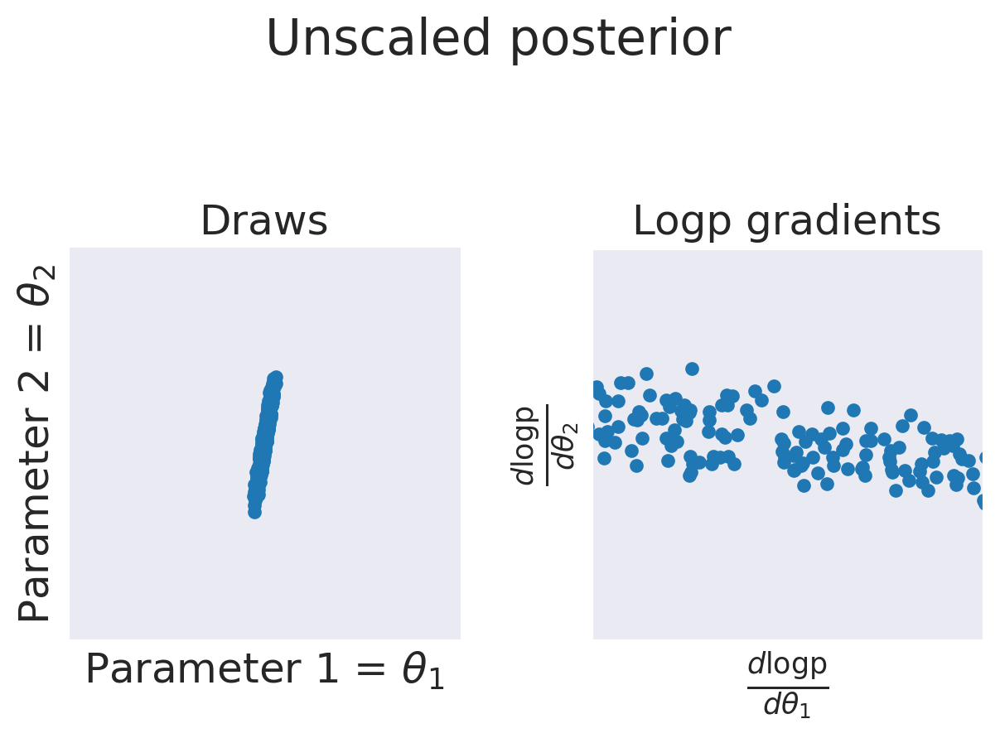
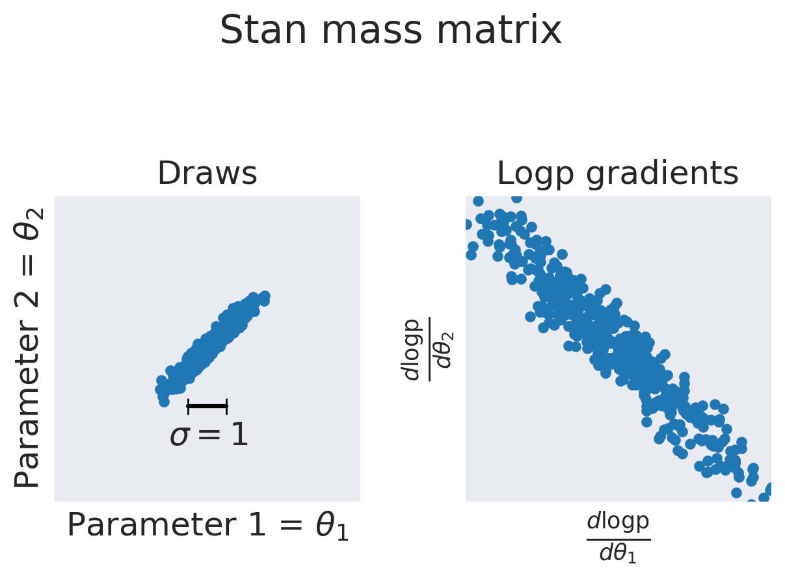
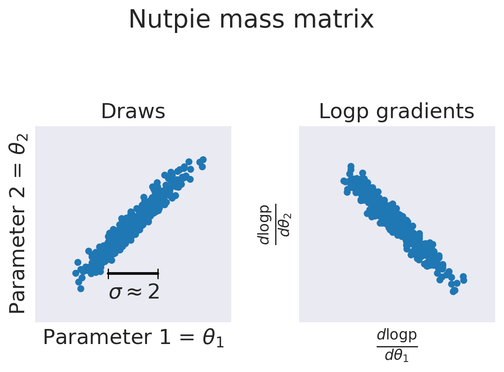
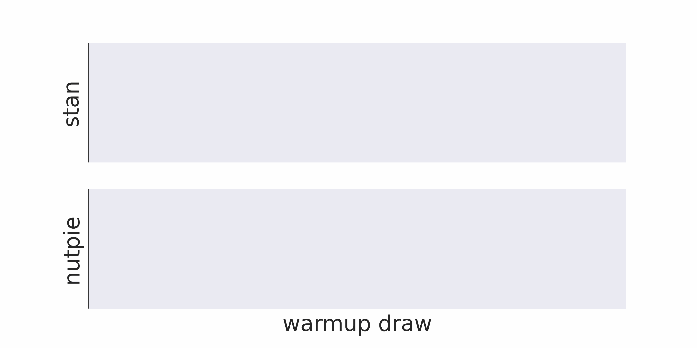
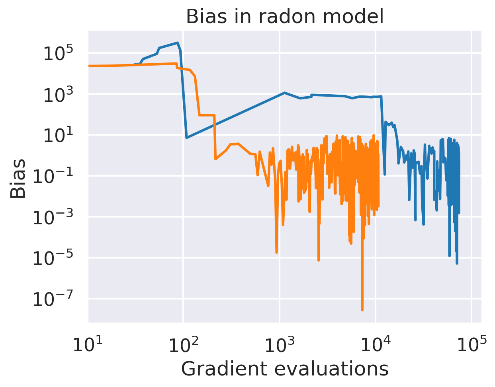
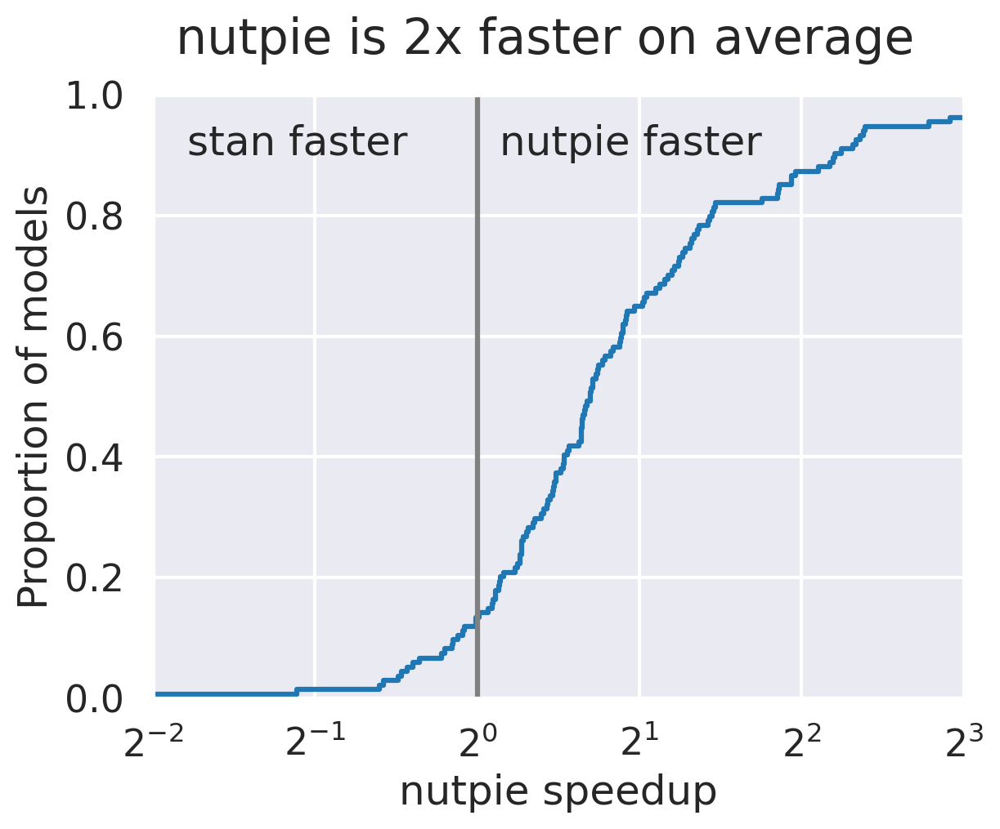

## Nutpie: Fast sampling with Stan, python and rust Adrian Seyboldt Notes: I'm Adrian Seyboldt, core dev of PyMC (python lib for bayesian stats) Work with PyMC Labs, consultency. Nutpie is a fast implementation of NUTS for Stan or PyMC models. On average 2x faster than Stan (*). Convenient interface. --- ### Why a new sampler Default PyMC sampler can use some upgrades: - A lot of Python overhead - GIL can get in the way - Support multiple computational backends (jax, PyTorch, numba) - Improve mass matrix adaptation Notes: Stan -> PyMc mass matrix adapt (2017 in PyMC) -> Maybe updates for Stan? --- <img src="plots/logo.png" alt="Bridgestan Logo" width="20%"/> Low-level and fast interface to Stan models. Notes: todo ref to bridgestan paper Leute nachschauen! --- ### Why use it for Stan models? - Faster mass matrix adaptation - Avoid overhead for trace storage - Sampler pausing - Live inspection of the trace - Extra sampler statistics - Detailed progress info - Compatible with arviz ecosystem to analyze traces Notes: todo one after the other? --- ## Mass matrix adaptation <div class="r-stack"> <div class="fragment fade-out" data-fragment-index="0">  <p> Auto-remparametrization that rescales parameters. </p> </div> <div class="fragment current-visible" data-fragment-index="0">  <p> Rescale so that variance is 1 </p> </div> <div class="fragment">  <p> Rescale so that geomean(variance, 1/gradvar) is 1 </p> </div> </div> --- - Mass matrix converges faster - Good properties for multivariate normal posteriors - Generalizes to full mass matrix or normalizing flows Try the experimental low-rank modified mass matrix adaptation! Notes: todo "Try..." später dazu todo titel? --- ## Early tuning  Notes: todo remove orange ---  Notes: todo which model? --- ## Results from posteriordb Comparing sampler performance is hard! We compare effective sample size per second. todo ref to posteriordb Notes: todo title "Nutpie is on average 2x faster" ---  Notes: todo add "nutpie faster", "stan faster" Look up actual percentages. add ref to samplerlab repo --- ## Usage `pip install "nutpie[stan]"` and make sure C++ compiler is installed ```python import nutpie code = """ data { mu ... } """ compiled = nutpie.compile_stan_model(code=code) compiled = compiled.with_data(mu=1.) trace = nutpie.sample(compiled) ``` ---  --- ## Inspect trace ```python sampler = nutpie.sample(compiled, blocking=False) sampler.pause() sampler.resume() trace = sampler.inspect() sampler.wait(timeout=1) ``` --- Feedback and benchmarks welcome! @aseyboldt on discourse or github. Please report bugs if you see any! Questions? Notes: I hope I could make you curious. If you want to give it a go and try it, see QR code... Feedback and benchmarks welcome. Please report bugs --- ## Some extra sample stats - Mass matrix over time -> was the tuning period long enough? - Exact location of divergences -> better for parallel plots - Unconstrained draws and grads -> Easier to find posterior correlations and parametrization problems